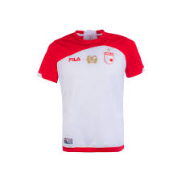

Camisetas de papel El Santi
Camisetas de papel Santilin
Creada desde 2025 por un chico apasionado al futbol y a las manualidades, las camisetas de papel son una decoración y/o accesorio que te hace recordar momentos iconicos del DEPORTE REY, no solo es un pedazo de papel. es algo que te recordara un pedazo de historia. PAGOS POR NEQUI:3242956311
